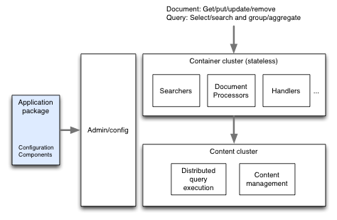

A Vespa system consists of one or more stateless and stateful clusters configured by one application package. A Vespa system is configured and managed through an admin cluster as shown below.
All nodes of a Vespa system has the same software installed. Which processes are started on each node and how they are configured is determined by the admin cluster from the specification given in the services.xml file in the application package.
To change the system, deploy the changed application to the admin cluster. The admin cluster will automatically change the participating nodes as necessary. It is safe to do this while serving live query and write traffic. In rare cases the admin cluster will tell you that some processes must be restarted to make the change effective. To avoid query or write traffic disruption, such restarts must be done on one node at the time, and you must wait until the node is fully up before restarting the next node.
To create a fully functional production ready multinode system from a single-node sample application, follow these steps:
<services version="1.0">
<admin version="2.0">
<adminserver hostalias="admin0"/>
<configservers>
<configserver hostalias="admin0"/>
</configservers>
</admin>
...
</services>
This cluster can have multiple nodes, but it is not strictly necessary as the other nodes will continue to run
when the admin cluster is unreachable.
echo "override VESPA_CONFIGSERVERS [adminserver-hostname]" >> /opt/vespa/conf/vespa/default-env.txtwhere [adminserver-hostname] is replaced by the full hostname of the admin server (or a comma-separated list if you configured multiple ones).
node tags in services.xml (to avoid traffic disruption on restarts or node failure you need at least two nodes in each cluster). You can add the same nodes
to multiple clusters if you like.
Logs are automatically collected from all nodes to the admin cluster nodes in real time.
To view log messages from the system, run vespa-logfmt on an admin node.